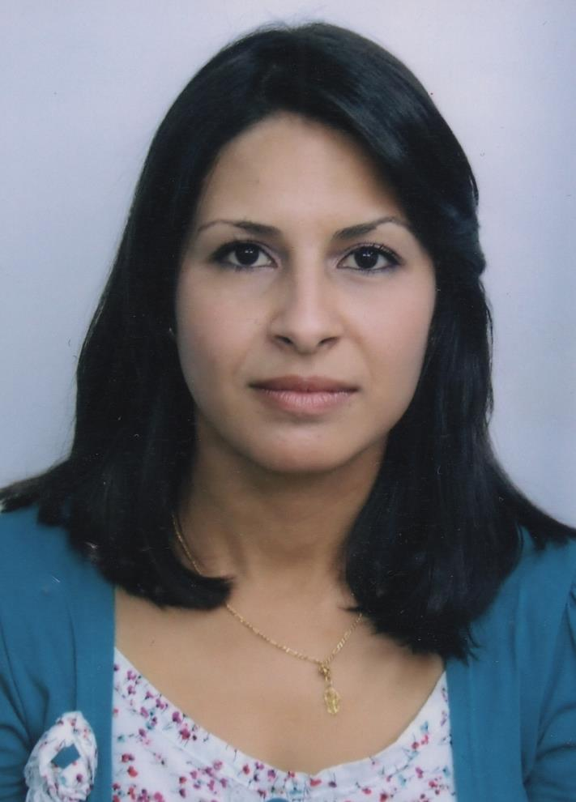

Wafa MOUSSER
Ingénieur en informatique. Huit ans d'expérience en administration des systèmes et réseaux et
trois ans en data sciences.
Intéressée par le développement agile de logiciels et/ou de sites web en général, la vision par ordinateur et
la classification d'images médicales en particulier.
Expériences professionnelles
Stage de fin d'études
Nov 2019- Nov 2020 au Laboratoire IEMN DOAE de UPHF de Valenciennes en
collaboration avec le Laboratoire de Modélisation et d'Implémentation des Systèmes Complexes,
Université Constantine 2, Algérie.
Objectifs:
- Préparation d’un framework de classification incrémentale
- Implémentation de l’approche proposée
- Application de la méthode pour la classification des images MNIST et CIFAR
- Application de la méthode pour la classification des images histologiques
des cancers du sein et du col de l'utérus
Stage d'application
Juin 2019- Sep 2019 à Cairn Biosciences (Paris) en collaboration avec
le Laboratoire de Recherche en Informatique (LRI), Université Paris-Saclay.
Missions: Préparation des images microscopiques de cellules pour l'extraction des vecteurs features
de phénotypes en utilisant des modèles convolutionnels pré-entraînés.
Résultats:
- Préparation des images: débruitage, détection d'objects et géneration de patchs
- Utilisation des modèles pré-entraînés Keras pour la Feature extraction des phénotypes
Enseignante
Oct 2016- Mai 2019 au Département Physique Chimie à l'École Normale Supérieure
Constantine, Algérie.
Chargée des modules:
- Technologies Modernes de l’Information et de la Communication
- Algorithmique et programmation C & Pascal
Administrateur Systèmes et réseaux
Fév 2009 - Sep 2016 à la Préfecture de Constantine, Algérie.
Missions:
- Administration des plateformes : Passeports et Cartes Nationales d’identité Biométriques,
Permis de Conduire & Cartes Grises
- Installation réseaux et support technique N1, N2 et N3
- Gestion des groupes et des utilisateurs Active Directory
- Veille au maintien en conditions opérationnelles des postes (16 serveurs et 100 clients)
- Installation des MAJ
- Sauvegardes & backup
- Formation du personnel (4 ingénieurs & utilisateurs des applications)
- Développement d'applications pour la gestion interne des services
Enseignante
Sep 2007 - Jan 2009 à International Computer Services Constantine, Algérie.
Chargée de:
- Module algorithmique et programmation Delphi 7
- Module structures de Données
- Encadrement de projets de fin d’études pour BTS
Enseignante
Sep 2007 - Juin 2009 Département de Chimie à l’Université Constantine 1, Algérie.
Chargée du module:
- Travaux pratiques Programmation Fortran 90
Diplômes et formation
Ecole doctorale en bioinformatique
Sep 2016 à ce jour à l’Université Constantine2, Algérie.
Thème: Contribution de l’apprentissage incrémental dans la résolution de
problèmes complexes en bioinformatique.
Axes de recherche:
- Deep learning (Convolutional Neural Networks et Autoencodeurs)
- Incremental learning of Convolutional Neural Networks
- Catastrophic forgetting
- Breast & cervix cancers histopathological image classification
Master en informartique
Sep 2014 - Juin 2015 Université Constantine2, Algérie.
Option : Réseaux et Systèmes Distribués
Ingénieur d’Etat en Informatique
Sep 2002 - Juin 2007 Université Constantine 1, Algérie.
Option : Systèmes d’Information Avancés
Baccalauréat
Juin 2002 Lycée Zighoud Youcef Constantine, Algérie.
Option : Sciences de la Nature et de la Vie
Compétences techniques
Programmation
- Python3
- Framework Django
- Keras
- HTML5
- CSS3
- Java
- JavaScript
SGBD
- PostgreSQL
- MySQL
- Oracle 10g
Systèmes d'exploitation
- Ubuntu 18.04, 16.04
- Windows XP, 7, 8, 10
- Windows server 2003, 2008
- VMware Workstation Player
Autres
- Docker
- Git
- Gestion de projet Agile
- Méthodologie Scrum
- API Rest
- DevOps
- Latex
- Outils Microsoft Office
Publications
- Wafa MOUSSER & Salima OUADFEL & Abdelmalik TALEB-AHMED,
Incremental learning of Convolutional Neural Networks in Bioinformatics,
Artificial Neural Networks for Renewable Energy Systems and Real-World
Applications, Elsevier 1st Edition, 01/06/2021, 500 pages.
- Salima OUADFEL & Wafa MOUSSER & Ismail GHOUL, Incremental deep learning
model for Plant Leaf Diseases detection, Artificial Neural Networks for Renewable Energy
Systems and Real-World Applications, Elsevier 1st Edition, 01/06/2021, 500 pages.
- Wafa MOUSSER & Salima OUADFEL, Deep Feature Extraction for Pap-Smear
Image Classification : A Comparative Study, 05 pages, 5th International Conference on
Computer and Technology Applications, ICCTA 16-17 Avril 2019 à Istanbul, Turquie.
Langues
- Français: Excellent
- Anglais: Bon
- Arabe: Excellent